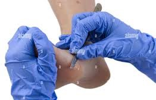
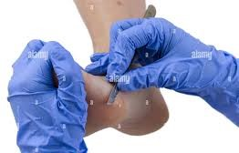

En primer lugar, mantener pies y manos libres de callosidades te dará una piel más tersa, su textura será más suave y eso se verá reflejado entre más frecuente sea el tratamiento.
 

El baño de pies estimula la circulación sanguínea, elimina las secreciones sudorales y reduce temporalmente la infección bacteriana. Si el baño es alcalino ablanda la capa endurecida de la queratina de la piel, durezas, callos, etc.
Las uñas acrílicas son aquellas que se efectúan con un polvo acrílico. El polvo acrílico (polímero) se seca velozmente cuando se mezcla con un un agente líquido (monómero). Por este motivo no precisan curado en lámpara, al revés que las uñas de gel.
La reflexología, también conocida como terapia de zonas reflejas, es una forma de medicina alternativa que usa la aplicación de presión en los pies y las manos con técnicas específicas de pulgar, dedo y mano sin el uso de aceite o loción.